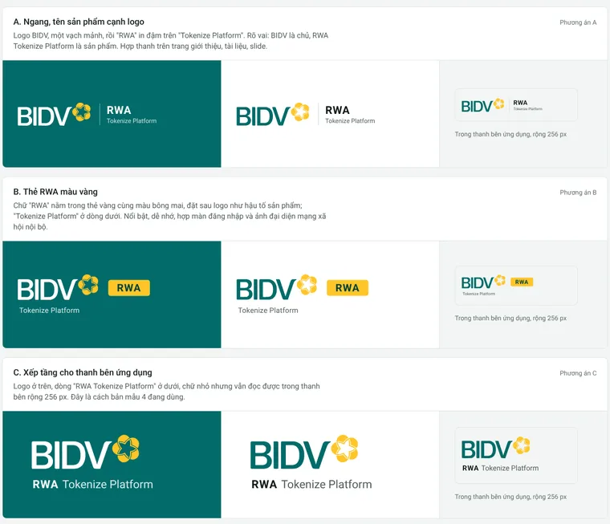
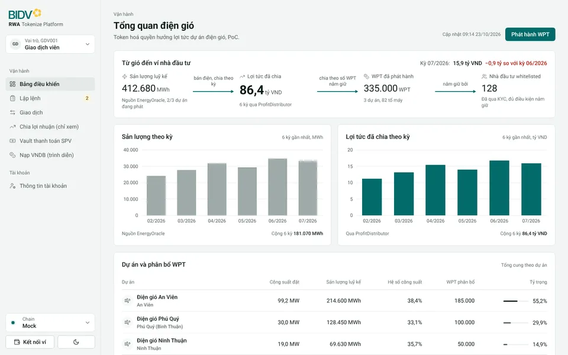
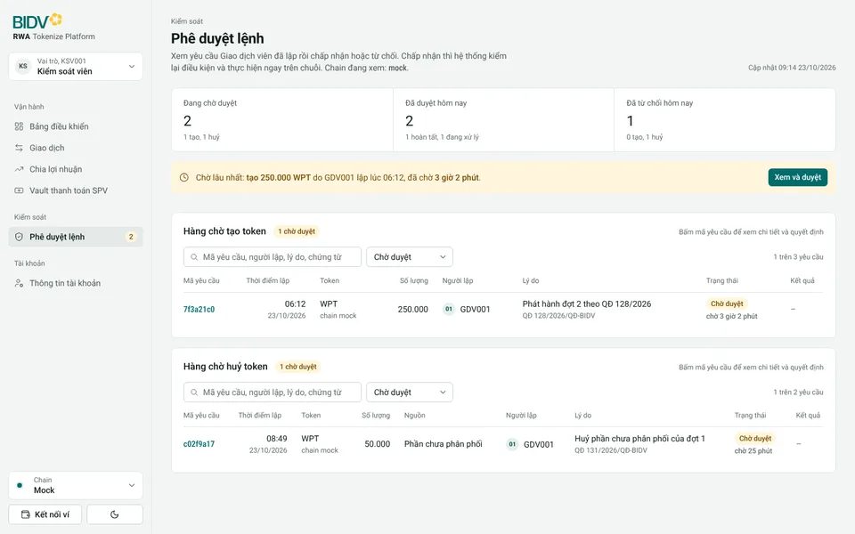
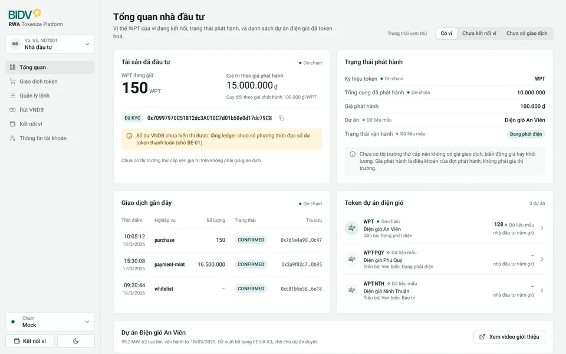

Màu thương hiệu xanh ngọc BIDV, font Roboto, địa chỉ ví bằng Roboto Condensed, logo BIDV giữ nguyên kèm "RWA Tokenize Platform". Phong cách lấy từ skill design-taste-frontend: khung không màu, màu chỉ đặt lên dữ liệu chính và một nút chính, số liệu thẳng cột, mỗi màn trả lời một câu hỏi trước. Mới dựng ba màn đại diện cho ba vai; duyệt xong em mới làm đủ 21 màn.
Logo BIDV được vector hoá lại từ ảnh Sếp gửi để giữ đúng hình chữ và bông mai mà vẫn nét ở mọi cỡ. Bản vector này là tạm; khi có tệp SVG chính thức thì thay vào, các phương án giữ nguyên.

Mỗi màn giữ đủ trường, biểu đồ, bộ lọc, nhãn nguồn dữ liệu của màn hiện tại (ánh xạ 1-1), chỉ đổi cách trình bày. Bấm để mở bản chạy được; đổi vai và chain ở thanh bên trái, đổi sáng tối ở nút cuối thanh bên.



Những điểm có đánh dấu "cần chốt" là đánh đổi; Sếp duyệt thì em áp cho cả 21 màn, không duyệt thì em giữ cách của bản 3 cho điểm đó.
| Hạng mục | Bản 3 | Bản 4 |
|---|---|---|
| Màu | Lục BIDV cũ, ô xanh và vàng đậm có gradient | Xanh ngọc thương hiệu #016B69; nền xám xanh rất nhạt; màu chỉ nằm trên dữ liệu chính (cột lợi tức, đường dẫn giá trị) và nút chính. Vàng bông mai chỉ ở logo |
| Khung | Thanh bên có cảnh tua-bin; thanh trên chứa Chain, Vai trò, đổi giao diện, ví | Bỏ thanh trên. Logo và dropdown Vai trò ở đầu thanh bên; dropdown Chain, Kết nối ví, đổi sáng tối ở cuối. Vẫn là dropdown như app thật |
| Ô số liệu | Bốn ô rời, icon trong ô tròn, minh hoạ cánh đồng gió và đồng xu | Một dải "Từ gió đến ví" nối bốn chặng bằng đường dẫn có chú thích; con số trả lời câu hỏi của màn to nhất. Không icon trong ô màu |
| Biểu đồ | Một biểu đồ hai trục, đường cong, vùng tô | Hai biểu đồ cột cạnh nhau cùng sáu kỳ, có dòng cộng để đối chiếu với con số tổng |
| Dự án | Thẻ phân bổ WPT và ba thẻ dự án riêng | Một bảng gộp đủ trường của cả hai, có dòng cộng khớp với dải giá trị |
| Phê duyệt | Ba ô số, hai bảng | Thêm dòng "chờ lâu nhất" và "chờ bao lâu" tính từ thời điểm lập sẵn có (không thêm dữ liệu). Số "Đã duyệt hôm nay" tính từ dòng nên là 2 (bản 3 ghi 1, lệch với dữ liệu mẫu) |
| Chữ | Roboto; địa chỉ ví Roboto Mono | Roboto; địa chỉ ví, mã băm, mã yêu cầu bằng Roboto Condensed theo Sếp chốt |
| Icon 3D, minh hoạcần chốt | Icon 3D cạnh tiêu đề, cảnh tua-bin, đồng xu trên màn nghiệp vụ | Bỏ khỏi màn nghiệp vụ để giữ vẻ nghiêm của ngân hàng; dồn minh hoạ sang trang giới thiệu |
| Chuyển độngcần chốt | Khối vào trang theo nhịp gió, số lăn, nét biểu đồ tự vẽ | Màn nghiệp vụ không có hiệu ứng vào trang (người vận hành mở màn nhiều lần mỗi ngày); giữ phản hồi thao tác mềm bằng lò xo: viên nang menu, nút chuyển, nút nhún khi bấm, dropdown, đổi sáng tối bằng vòng tròn lan. Trang giới thiệu vẫn giữ đủ hiệu ứng |
Bản mẫu tĩnh để duyệt giao diện, dữ liệu mẫu, không có chức năng thật. Logo BIDV vector hoá tạm từ ảnh chủ dự án gửi. Phong cách: design-taste-frontend, kiểu achromatic-ledger, seed 2076738530.